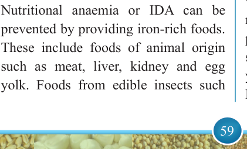

59


Food and Human Nutrition

Form Two
Deficiency Anaemia (IDA), Vitamin A
Deficiency (VAD) and Iodine Deficiency
Disorders (IDD). Others include scurvy, beriberi, pellagra, rickets in children and osteomalacia in adults. Depending on the quantity and duration, excessive
intake of some micronutrients especially
through supplements can cause adverse health effects. For example, vitamin A if consumed in excess may cause health risks including liver damage and birth defects if taken during pregnancy.
(i) Iron Deficiency Anaemia
Iron Deficiency Anaemia (IDA) also called nutritional anaemia occurs when the body lacks sufficient iron to produce
an adequate amount of haemoglobin, the
protein in blood cells that carries oxygen.
This is caused by inadequate intake of
iron-rich foods, foods rich in vitamin B12
(Cyanocobalamin) and B9 (Folic acid).
Other causes include blood loss, worm infestation, frequent illness like malaria
and red blood cell disorders such as sickle
cell anaemia. The signs and symptoms of anaemia include headache; dizziness;
paleness of the inner part of eyelids, gums,
palms and nails; body weakness; shortage
of breath and fatigue. Fainting may also occur due to lack of oxygen in the brain.
Nutritional anaemia or IDA can be prevented by providing iron-rich foods.
These include foods of animal origin such as meat, liver, kidney and egg yolk. Foods from edible insects such
as longhorn grasshoppers and winged termites and foods from plant origin like beans, cow peas, pigeon peas, nuts, broccoli and green leafy vegetables can help to prevent nutritional anaemia. Iron deficiency can be treated through dietary management and iron supplements.
(ii) Vitamin A Deficiency
Vitamin A Deficiency (VAD) is a condition resulting from insufficient vitamin A in the body. It may be due
to inadequate dietary intake or other causes such as excessive alcohol
consumption. Vitamin A enhances the bodyʼs ability to resist infections and it facilitates the growth of body tissues. It
is also essential for vision. Vitamin A deficiency can lead to night blindness
(Nyctalopia)
and
Xerophthalmia.
Night blindness is poor vision in the dark, which is one of the first signs of VAD. Xerophthalmia is severe dryness of eyes. If these conditions are not treated, they will lead to
Keratomalacia, a condition in which the eye gets cloudy and it softens. If not treated, it may lead to complete blindness. This deficiency disorder can be prevented by eating a balanced diet, which contains an adequate amount of vitamin A from sources like kidney, milk, liver, fish oil, carrots, papaws, pumpkins, mangoes, orange-fleshed sweet potatoes, egg yolks, oranges and yellow maize (Provitamin A maize).
Provitamin A maize (PVA) is a special

17/09/2025 16:30